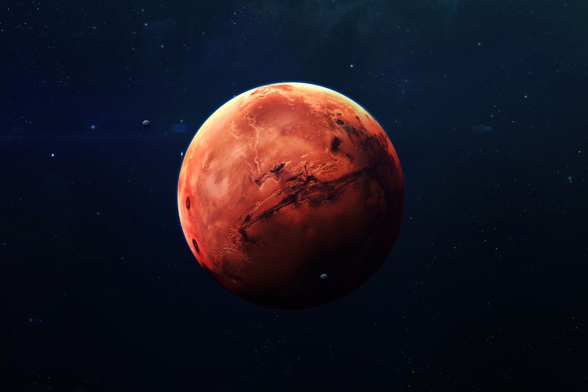

De Planeet

Op deze pagina is informatie te vinden over de planeet Mars. Vanaf de zon gezien is Mars de vierde planeet van ons zonnestelsel en het is de laatste aardachtige planeet. Mars is aanzienlijk kleiner dan de Aarde en is de op een na kleinste planeet. Alleen Mercurius is nog kleiner. Mars wordt wel de rode planeet genoemd omdat deze 's nachts te zien is als een heldere roodachtige ster, maar is in feite eerder okerkleurig dan rood.
Mars heeft een dunne atmosfeer die vergelijkbaar is met de atmosfeer op aarde op zo'n 40 kilometer boven de zeespiegel. Deze bestaat voornamelijk uit koolstofmonoxide. Het oppervlakte van Mars bestaat onder andere uit inslagkraters (vergelijkbaar met die op de Maan), poolkappen bestaande uit waterijs, vulkanen, vallijen en woestijnen. Mars is een koude planeet en heeft geen vloeibare ijzeren kern zoals de Aarde. Mede hierdoor, en door de dunne atmosfeer en grotere afstand tot de zon kan de temperatuur dalen tot -125ºC op de polen. Op de evenaar kan het overdag in de zomer wel 20ºC worden, maar zodra de zon ondergaat zakt dit naar -73ºC. Juist doordat de atmosfeer dun is verdwijnt de aanwezige warmte snel in de ruimte.
Naast een dunne atmosfeer beschikt Mars ook niet over een magnetisch veld zoals de aarde. Deze beide factoren zorgen ervoor dat de planeet voortdurend wordt blootgesteld aan straling door de zon. Op de Aarde worden wij hiertegen beschermd door de atmosfeer en het magnetisch veld.
Door de verschillende ruimtemissies (zie de pagina verkenning), weten we dat er een oceaan op Mars bestond die het noordelijk halfrond grotendeels bedekte. Vanwege zijn kleine formaat kon Mars deze oceaan echter niet behouden. Het water verdampte tot waterstof en zuurstof. Het waterstof verdween vervolgens in de ruimte, omdat de zwaartekracht van Mars niet sterk genoeg was om het vast te houden.
De grootste vulkaan op Mars is Olympus Mons. Ter vergelijking: deze is drie keer zo hoog als Mount Everest.
Verder kent Mars ook een rotatieperiode of etmaal en zijn er seizoenen die ongeveer overeenkomen met die op Aarde.
Mars heeft twee manen: Phobos en Deimos. Deze zien er niet uit zoals onze Maan, maar zijn kleine, onregelmatig gevormde objecten. De binnenste maan Phobos heeft zeer snelle rotatieperiode van 7 uur en 39 minuten. De buitenste maan Deimos daarentegen heeft een rotatieperiode van Omdat Phobos een snellere rotatieperiode heeft dan dat Mars om zijn as draait, neemt de baan van deze maan af en wordt verwacht dat Phobos in de toekomst in stukken zal breken of zal neerstorten op Mars.